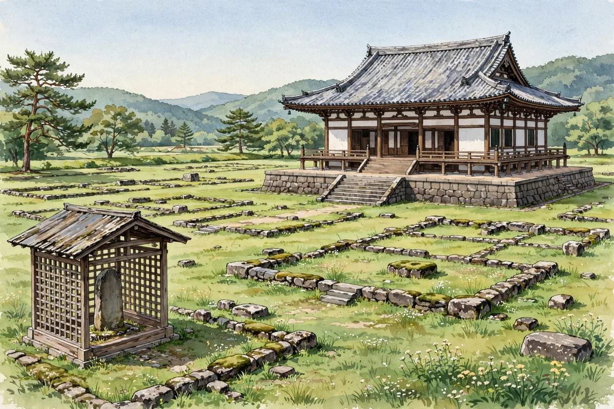

築地塀の下から奈良時代の材木塀――多賀城跡の発掘調査で塀の変遷を解く手がかり

城と神社にまつわる新しい動きをお伝えするニュース記事です。出典はNEWSjp（2026年11月12日）です。国の特別史跡「多賀城跡」で12日、発掘調査の様子が報道陣に公開されました。今回の調査では、時代ごとの塀の変遷を解明する重要な手がかりが見つかりました。
多賀城跡は、古代東北の政治や文化、軍事の中心地だった場所です。敷地はかつて、およそ900メートル四方の塀に囲まれていたと考えられています。県は今年5月から、北西の角にある塀の発掘調査を進めてきました。
今回の調査で見つかったのは、土を押し固めて作られた「築地塀」よりも古い時期の「材木塀」です。築地塀は平安時代のものとされますが、その下から、丸太を並べて作る材木塀が見つかりました。この材木塀は奈良時代に作られた可能性があり、塀の実態解明につながると期待されています。河北新報（2026年11月13日）によると、調査は北西隅の周囲を南北30メートル、東西10メートルにわたって行われ、北・西辺に沿って6カ所の整地層や築地塀が確認されました。築地塀は3時期の変遷があり、ほぼ同位置で内側に移しながら2回改修されていたといいます。
県は14日午前10時半から、この場所で発掘調査の成果を紹介する一般向けの現地説明会を開く予定だと報じられています。調査を担当した県多賀城跡調査研究所の廣谷和也副主任研究員は、「古代からここに残ってきた事がとても大事な財産なので、是非残っている多賀城の痕跡を間近で見てもらいたい」と話しています。
検定の学習ポイントは、多賀城と古代の城柵の役割です。多賀城は奈良時代の724年、陸奥国の国府と鎮守府が置かれた政治・軍事の拠点で、築地塀に囲まれた政庁跡が発掘され、正殿などが復元されています。古代東北経営の中心地として、国の特別史跡に指定されています。今回のように、塀の種類や重なり方から時代の変遷を読み解くのが、発掘調査の醍醐味です。関連記事「なかったはずの痕跡が姿を現す――三春城跡の三の丸で盛り土と石垣を発見」もあわせてどうぞ。
多賀城跡を訪れる際は、公式案内で最新の公開情報を確認してください。このサイトのイベント予定表では、12月19日・20日に横浜で開かれる「お城EXPO 2026」も案内しています。学芸員による最新の発掘調査の解説もあるとのことです。
天守つるぎから一言：土の下に、さらに古い塀が眠っていたんだね。塀の重なりが、そのまま多賀城の歴史の重なりだよ。
城と神社のニュースや検定の情報は、公式SNSでもお知らせしています。InstagramとThreadsの @tabi.kentei をフォローして、最新情報をチェックしてください。